Introduction
Ce rapport accompagne le relevé d'audit effectué sur le site « Caisse pour l'Avenir des Enfants » (CAE).
La méthodologie d'audit employée repose sur le référentiel RGAA 4.1, consultable à l'adresse suivante : https://accessibilite.public.lu/fr/rgaa4.1/criteres.html
L'audit a été réalisé au moyen de l'utilisation de navigateurs web et d'outils spécialisés. Des tests de restitution ont également été effectués conformément à la base de référence définie par le RGAA 4.1.
Échantillon
L'audit a porté sur un échantillon de 14 pages pour le niveau double A (AA) :
| Nº page | Titre de la page | URL |
|---|---|---|
| P01 | Accueil | https://cae.public.lu/fr.html |
| P02 | Contact | https://cae.public.lu/fr/support/contact/formulaire.html |
| P03 | Mention légales | https://cae.public.lu/fr/support/aspects-legaux.html |
| P04 | Accessibilité | https://cae.public.lu/fr/support/accessibilite.html |
| P05 | Plan du site | https://cae.public.lu/fr/support/plan.html |
| P06 | La caisse | https://cae.public.lu/fr/la-caisse/presentation.html |
| P07 | Résultats de recherche | https://cae.public.lu/fr/support/recherche.html?q=naissance |
| P08 | Allocations | https://cae.public.lu/fr/allocations.html |
| P09 | Primes de naissance article | https://cae.public.lu/fr/allocations/primes-de-naissance.html |
| P10 | Demande d'allocation postnatale | https://cae.public.lu/fr/demarches/formulaires/allocation-postnatale.html |
| P11 | Actualités | https://cae.public.lu/fr/actualites.html |
| P12 | Prime de naissance actualité | https://cae.public.lu/fr/actualites/2021/primes-de-naissance.html |
| P13 | Publications | https://cae.public.lu/fr/publications.html |
| P14 | FAQ | https://cae.public.lu/fr/faq/allocations-familiales.html |
Environnement de test (base de référence)
Quelques critères RGAA, notamment ceux de la thématique JavaScript, incluent des tests de restitution à effectuer sur des technologies d'assistance associées à des navigateurs et des systèmes d'exploitation. Pour qu'un dispositif HTML / WAI-ARIA ou son alternative soit considéré comme compatible avec l'accessibilité, il faut qu'il soit pleinement fonctionnel, en termes de restitution et de fonctionnalités sur certaines combinaisons. Vous trouverez une explication détaillée de cet environnement de tests dans le document du RGAA 4.1.
Nous détaillons ci-dessous la base de référence utilisée pour réaliser les tests de restitution des composants du site.
Environnement de test – ordinateur
| Technologie d'assistance | Navigateur |
|---|---|
| NVDA 2021.4 | Firefox 102 |
| JAWS 2021 | Firefox 102 |
| VoiceOver | Safari 15.5 |
Environnement de test — mobile
| Système d'exploitation | Technologie d'assistance | Navigateur |
|---|---|---|
| Android 12 | TalkBack (dernière version) | Chrome 103 |
Accessibilité des pages auditées
Le site présente un niveau général d'accessibilité moyen.
Le niveau moyen de conformité relevé atteint 66,07 % de conformité sur l'ensemble des pages auditées, avec 66,67 % de conformité au niveau simple A (A) et 66,07 % de conformité au niveau double A (AA).
Le site est partiellement conforme.
Conformité RGAA 4.1 du site
| Conforme | Non conforme | |
|---|---|---|
| A | 66,67 % | 33,33 % |
| AA (légal) | 66,07 % | 33,93 % |
Note sur le calcul de conformité
La conformité globale (Tableau « Conformité RGAA 4.1 ») est calculée de la manière suivante : C / (C+NC). C’est le nombre de critères conformes et NC le nombre de critères non conformes.
C'est ce nombre qui constitue la référence légale. Il représente le taux de conformité de l'échantillon.
Il est normal que le taux de conformité global diffère sensiblement du taux de conformité par page. En effet, un critère NC (non conforme) sur une page rend le critère non conforme sur l'ensemble de l'échantillon.
Pour qu'un site soit conforme (100 % des critères applicables sont conformes au niveau AA), il est nécessaire que le taux de conformité par page équivaille à 100 %.
Conformité pour chaque niveau
| Conforme | Non conforme | |
|---|---|---|
| A | 66,67 % | 33,33 % |
| AA | 64,71 % | 35,29 % |
Moyenne par pages
| Nº page | Titre de la page | %C |
|---|---|---|
| P01 | Accueil | 78,72 % |
| P02 | Contact | 85,42 % |
| P03 | Mention légales | 97,50 % |
| P04 | Accessibilité | 97,37 % |
| P05 | Plan du site | 100,00 % |
| P06 | La caisse | 100,00 % |
| P07 | Résultats de recherche | 88,37 % |
| P08 | Allocations | 97,30 % |
| P09 | Primes de naissance article | 94,44 % |
| P10 | Demande d'allocation postnatale | 89,36 % |
| P11 | Actualités | 92,31 % |
| P12 | Prime de naissance actualité | 94,74 % |
| P13 | Publications | 90,24 % |
| P14 | FAQ | 92,31 % |
Moyenne par thématiques
| Thématiques | C | NC |
|---|---|---|
| Images | 66,67 % | 33,33 % |
| Couleurs | 33,33 % | 66,67 % |
| Liens | 50,00 % | 50,00 % |
| Script | 50,00 % | 50,00 % |
| Eléments obligatoires | 55,56 % | 44,44 % |
| Structuration | 00,00 % | 100,00 % |
| Présentation | 91,67 % | 08,33 % |
| Formulaires | 66,67 % | 33,33 % |
| Navigation | 80,00 % | 20,00 % |
| Consultation | 66,67 % | 33,33 % |
Impacts utilisateurs
Les principales personnes impactées sont les personnes aveugles et celles qui naviguent au clavier. Les problèmes liés aux scripts, à l'API ARIA et aux formulaires, rendent parfois difficile l'utilisation du site par ces utilisateurs.
Note sur le relevé des non-conformités
Ne sont cités dans ce rapport que quelques exemples issus du relevé des non-conformités.
De plus, toutes les occurrences d'une non-conformité ne sont pas listées dans le relevé. Par exemple : « Les textes en vert clair sur fond blanc (exemple « Envoi de pièces », « Prochain paiement », ...) ont un contraste de 4.28 au lieu de 4.5 », le relevé mentionne quelques occurrences, mais ne les cite pas tous.
Avis
Le site Caisse pour l'Avenir des Enfants (CAE) a un niveau moyen d'accessibilité. Même si le taux global révèle un statut partiellement conforme, nous notons certaines bonnes pratiques et des efforts pour la prise en compte de l'accessibilité. Nous n'avons pas relevé de non-conformité dont la correction nous semble impossible, sous réserve des contraintes techniques.
Les non-conformités les plus bloquantes pour les utilisateurs concernent :
- Des contrastes insuffisants sur les textes et certains composants d'interface ;
- Les scripts, notamment les composants ARIA qui ne sont pas bien implémentés ;
- Les éléments non atteignables au clavier (par exemple, les sous-menus) ;
- La structure HTML et les landmarks ARIA ;
- La non-visibilité de prise de focus sur certains éléments (par exemple, le logo du site) ;
- Une image porteuse d'information sans alternative.
Ce sont donc ces points qui devront nécessiter une attention toute particulière et qui demanderont le plus d'efforts.
Annexe technique
Images
Recommandation
Donner à chaque image porteuse d'information une alternative textuelle pertinente et une description détaillée si nécessaire. Lier les légendes à leurs images. Remplacer les images textes par du texte stylé lorsque c'est possible.
Images porteuses d'information
Il est nécessaire de donner une alternative pertinente dans le cas où la suppression de l'image entraînerait un problème de compréhension des contenus.
Constats sur le site
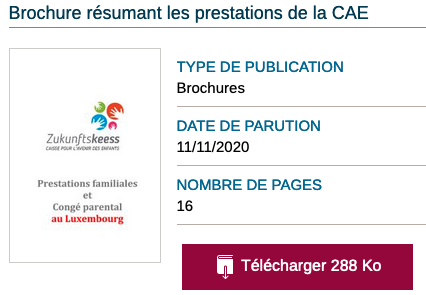Sur la page des publications, l'image permettant de prévisualiser le PDF ("Prestations familiales et Congé parental au Luxembourg") a un attribut alt="" (vide).
Notes : Si cela n'est pas possible de mettre en place une alternative sur l'image, il faudra modifier le titre "Brochure résumant les prestations de la CAE" pour reprendre le titre présent sur l'image.
Couleurs
Recommandation
Ne pas donner l'information uniquement par la couleur et utiliser des contrastes de couleurs suffisamment élevées pour les textes et les composants d'interface.
Contrastes des textes
Plusieurs couleurs présentent un rapport de contraste insuffisant, ce qui peut poser problème aux personnes déficientes visuelles qui ont des difficultés à percevoir les couleurs ou les contrastes.
Rapports de contrastes définis par le RGAA
- Pour les textes qui ont une taille de police calculée inférieure à 24px sans effet de graisse ou une taille de police calculée inférieure à 18,5px avec effet de graisse, le rapport de contraste entre la couleur du texte (y compris le texte en image) et son arrière-plan doit être de 4.5:1, au moins.
- Pour les textes qui ont une taille de police calculée supérieure ou égale à 24px sans effet de graisse ou une taille de police calculée supérieure ou égale à 18,5px avec effet de graisse, le rapport de contraste entre la couleur du texte (y compris le texte en image) et son arrière-plan doit être de 3:1, au moins.
Vous pouvez foncer les couleurs pour obtenir le rapport de contraste exigé.
Si la charte graphique ne peut être modifiée, fournissez une méthode aux utilisateurs pour consulter le site avec des contrastes suffisants. Ceci peut être réalisé simplement avec une fonctionnalité JavaScript et une surcharge CSS des couleurs.
Vous pouvez voir un exemple de ce type de mécanisme sur le site sncf.com. Dans les réglages d'accessibilité, vous trouverez une option qui permet d'afficher le site avec des contrastes renforcés et inversés.
Constats sur le site
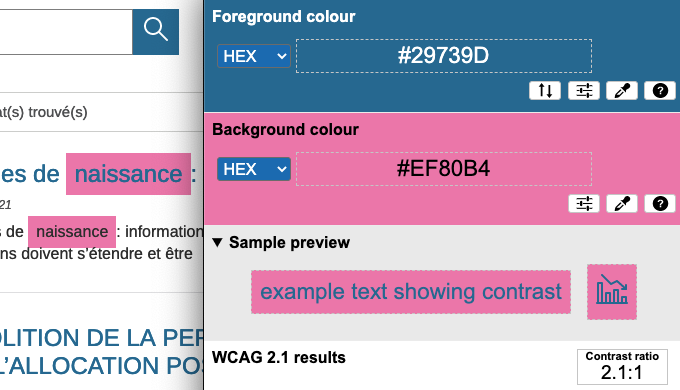Sur la page de résultats de recherche, les textes mis en évidence de la recherche (dans ce cas le mot "naissance") bleu sur fond rose ont un ratio de 2.1:1 au lieu de 4.5:1.
Contraste des composants d'interface
Les composants d'interface, les illustrations porteuses d'information ou encore les mises en couleurs porteuses d'information doivent être suffisamment contrastés pour être perçus par les utilisateurs ayant des troubles de perception des couleurs. Par exemple, une icône porteuse d'information devra avoir un rapport de contraste avec la couleur de fond de 3. De même, pour un champ de saisie de formulaire, dont la zone active est matérialisée par sa bordure, alors la couleur de cette bordure devra avoir un rapport de contraste de 3 avec la couleur de fond de la page.
Constats sur le site
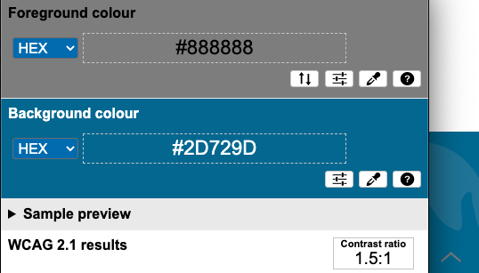Sur toutes les pages du site, en fonction de la position du bouton « Haut de page » représenté par une flèche, situé en bas à droite de la page. Le contraste entre le bouton et le fond n'est plus suffisant. Par exemple le gris sur fond bleu donne un ratio de 1.5:1 au lieu de 3:1.
Liens
Recommandation :
Donner des intitulés de lien explicites, grâce à des informations de contexte notamment, utiliser le titre de lien le moins possible. S'assurer que le nom visible est contenu dans le nom accessible.
Titres de liens (infobulles)
La restitution des titres de liens (attribut title sur une balise) dépend fortement des lecteurs d'écran et des préférences utilisateurs. Ainsi, l'utilisation de ces infobulles doit être limitée aux cas où l'infobulle apporte de l'information supplémentaire par rapport à l'intitulé du lien. De plus, cette infobulle doit reprendre au moins l'intitulé du lien pour être considérée comme conforme.
Constats sur le site
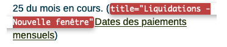Sur la page d'accueil du site, le lien « Dates des paiements mensuels », possède l'attribut title="Liquidations - Nouvelle fenêtre" qui ne reprend pas l'intitulé du lien.
Scripts
Recommandation :
Donner si nécessaire à chaque script une alternative pertinente. Rendre possible le contrôle de chaque code script au moins par le clavier et la souris et s'assurer de leur compatibilité avec les technologies d'assistance. Identifier les messages de statut lorsque c'est nécessaire.
Gestion de la visibilité de zones
Le site possède des fonctionnalités d'affichage ou de masquage des zones de contenus. L'état affiché/masqué du contenu additionnel doit pouvoir être disponible pour les technologies d'assistance afin que les utilisateurs aveugles accèdent à cet état.
Pour ce type d’élément, l’implémentation du motif ARIA Disclosure est recommandée.
Constats sur le site
-
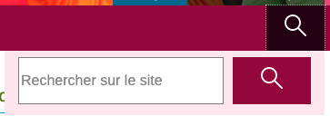
Dans l'en-tête principal du site, le composant permettant de contrôler l'affichage du champ de recherche n'implémente pas correctement le modèle de conception Aria Disclosure : l'attribut
aria-expandedest manquant sur le bouton. Et le bouton et la zone contrôlée ne sont pas adjacents. -
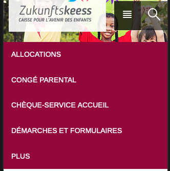
Dans l'en-tête principal du site, le composant permettant de contrôler l'affichage du menu en version mobile n'implémente pas correctement le modèle de conception Aria Disclosure : l'attribut
aria-expandedest manquant sur le bouton. Et le bouton et la zone contrôlée ne sont pas adjacents.
Éléments obligatoires
Recommandation
Vérifier que chaque page web a un code valide selon le type de document, un titre pertinent et une indication de langue par défaut. Vérifier que les balises ne sont pas utilisées uniquement à des fins de présentation, que les changements de langues et de direction de sens de lecture sont indiqués.
Titre de la page
Le titre de la page (visible dans l'onglet du navigateur) est un élément de repère dans le site web. Pour les utilisateurs de lecteurs d'écran (utilisateurs aveugles ou grands malvoyants), c'est le premier élément restitué par le lecteur d'écran au chargement de la page. Cela permet de donner du contexte aux utilisateurs qui n'ont pas une vision globale de la page. C'est l'information à laquelle les utilisateurs avec des troubles de la mémoire accèdent lorsqu'ils naviguent avec l'historique de navigation du navigateur. Il est donc essentiel d'avoir des titres de pages pertinents, concis et très souvent uniques dans le site, et qui reflètent de la position de l'utilisateur dans le site web.
Il est des cas particuliers, comme les pages dont le contenu est une liste de résultats paginés (ex. : les résultats de recherche), pour lesquels le titre doit refléter la nature de la recherche ainsi que le numéro de page en cours de consultation.
Constats sur le site
-

Sur la page d'accueil, le titre de la page n'est pas pertinent, utiliser le modèle :
<title>Accueil - Caisse pour l'Avenir des Enfants - Luxembourg</title>ou, si "CAE" est un terme connu par tous,<title>Accueil - CAE - Luxembourg</title>. -
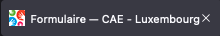
Sur la page de contact du site, le titre de la page contact : « Formulaire — CAE - Luxembourg », n'est pas pertinent, on ne sait pas de quel formulaire il s'agit. Il est préférable d'utiliser le modèle :
<title>Contact - Caisse pour l'Avenir des Enfants - Luxembourg</title>.
Indication de langue
Les lecteurs d'écran utilisent les indications de langue pour vocaliser le contenu dans la langue définie. La page doit contenir une définition de langue principale (généralement sur l'élément html).
Ensuite, les éléments de langue étrangère présents dans le contenu doivent être signalés. Si on trouve dans la page des termes absents du dictionnaire de la langue principale de la page, il faut les identifier afin que le lecteur d'écran les restitue dans la langue appropriée. En effet, une mauvaise prononciation pourrait mener à des incompréhensions pour les utilisateurs qui reposent uniquement sur des restitutions orales. Les noms propres sont exclus de cette obligation.
Constats sur le site
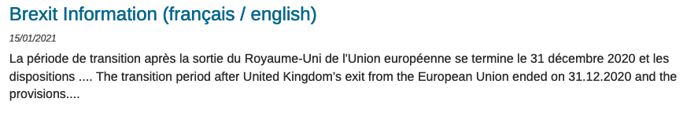Sur la page Actualités, le texte « The transition period after United Kingdom’s exit from the European Union ended on 31.12.2020 and the provisions... » n'a pas d'indication de changement de langue.
Validité du code
Les technologies d'assistance, comme les lecteurs d'écran ou les systèmes de contrôle à la voix, s'appuient sur le code des pages pour générer les restitutions et les interactions avec l'utilisateur. Un lecteur d'écran va exploiter le code HTML fourni par le navigateur et les informations accessibles au moyen des API d'accessibilité du système.
Si le code comporte des erreurs (balises mal fermées par exemple), il y a un risque que les fonctionnalités du lecteur d'écran soient impactées, comme la navigation de lien en lien par exemple.
Pour vérifier la conformité d'une page, vous pouvez utiliser le validateur mis à disposition par le W3C.
Constats sur le site
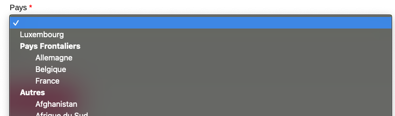Sur la page « Demande d'allocation postnatale », le champ <select> "Pays", contient une balise <option> vide.
Balises utilisées à des fins de présentation
Les éléments de structure HTML ont chacun une sémantique particulière (paragraphe, titre, image, lien, etc.). Si les éléments sont mal employés (détournés de leur utilité première), cela peut poser des problèmes aux utilisateurs qui naviguent à l'aide d'une technologie d'assistance (lecteur d'écran, plug-in…). En effet, les technologies d'assistance disposent de raccourcis permettant de naviguer rapidement entre certains types d'éléments (paragraphes, titres, listes, etc.). Si ces éléments sont mal employés, les utilisateurs ne peuvent pas utiliser ces fonctionnalités de repère et de navigation dans le contenu.
Constats sur le site

On trouve des paragraphes <p> vides servant à créer des espacements. Par exemple, dans la partie "Adresse postale" du bloc "Nos coordonnées" en bas de la page d'accueil.
Structuration de l'information
Recommandation
Utiliser des titres, des listes, des abréviations et des citations pour structurer l'information. S'assurer que la structure du document est cohérente.
Titres
Le titrage des contenus est une étape importante dans la structuration des contenus. Cela répond à deux besoins :
- identifier rapidement un contenu recherché ;
- naviguer rapidement dans le contenu en se déplaçant de titre en titre.
Un titrage correct fournit à l'utilisateur d'un lecteur d'écran un plan du document et lui permet de naviguer de titre en titre pour se déplacer plus rapidement dans le contenu de la page.
Pour valider la structure de votre page, vous pouvez utiliser l'extension Firefox HeadingsMap. Lorsque l'extension est active, sélectionnez l'onglet « Headings » et vérifiez la cohérence et l'imbrication des titres.
Constats sur le site
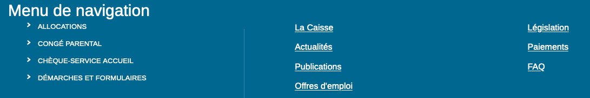Le titre de niveau 1 « Menu de navigation », positionné hors écran dans le pied de page, n'est pas pertinent et n'est pas utile. Le pied de page est déjà indiqué par son balisage et il ne s'agit pas du menu de navigation, mais d'une liste de liens d'accès rapide.
Listes
La structuration en listes permet aux utilisateurs de lecteurs d'écran de consulter plus rapidement le contenu, grâce à des raccourcis spécifiques, et d'accéder directement à une liste ou de la passer sans avoir à en parcourir tous les items.
Constats sur le site
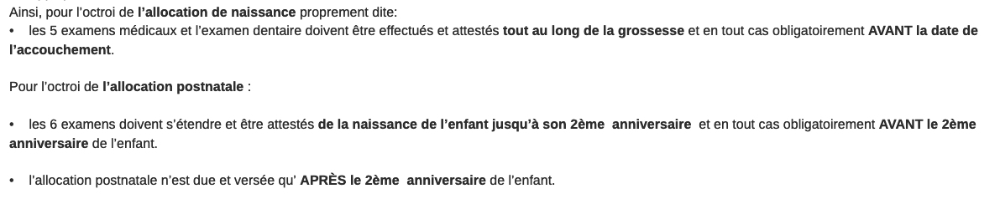Sur la page « Primes de naissance: informations importantes », les contenus à la suite des textes :
- « Ainsi, pour l’octroi de l’allocation de naissance proprement dite: » n'est pas une liste
<ul><li> - « Pour l’octroi de l’allocation postnatale : » n'est pas une liste
<ul><li>
Structure du document
L'utilisation correcte des balises HTML5 et des landmarks ARIA va permettre d'enrichir la restitution pour les utilisateurs aveugles qui ne perçoivent pas les mises en forme : la navigation principale ne sera plus perçue simplement comme une liste de liens, elle sera restituée à l'utilisateur comme un élément de navigation, par l'intermédiaire du lecteur d'écran qui annoncera « région » ou « repère ».
De plus, ces marqueurs sémantiques vont également constituer des éléments de navigation rapide dans la page. Grâce à un raccourci clavier, certains utilisateurs vont pouvoir naviguer plus rapidement entre les régions qui auront été ainsi identifiées.
Constats sur le site
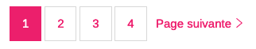Sur la page des résultats de recherche et Actualités, la pagination doit être intégrée dans une balise <nav role="navigation" aria-label="pagination">.
Présentation de l'information
Recommandation
Utiliser des feuilles de styles pour contrôler la présentation de l'information. Vérifier l'effet de l'agrandissement des tailles des caractères sur la lisibilité. S'assurer que les liens sont correctement identifiables, que la prise de focus est signalée, que l'interlignage est suffisant et donner la possibilité à l'utilisateur de contrôler la justification des textes. S'assurer que les textes cachés sont correctement restitués et que l'information n'est pas donnée uniquement par la forme ou la position d'un élément. S'assurer que les contenus sont lisibles et utilisables dans une fenêtre de largeur réduite. Veiller à ce que l'application de paramètres typographiques n'entraîne pas la perte de contenu ou de fonctionnalité. S'assurer que les contenus qui apparaissent au survol et à la prise de focus puissent être contrôlés par l'utilisateur.
Paramètres typographiques
Les utilisateurs malvoyants et/ou dyslexiques ont souvent recours à des adaptations de la présentation des textes. Pour cela, on doit s'assurer que de tels paramètres ne viennent pas perturber leur lecture sur le site.
Les présentations doivent supporter l'application de paramètres typographiques visant à augmenter les interlignages, interlettrages, les espaces entre les mots et entre les paragraphes. L'application de ces paramètres ne doit pas entraîner la perte de contenus ou de fonctionnalités :
- L'interlignage augmenté de 1,5 fois la taille de la police ;
- L'espacement entre les paragraphes augmenté de 2 fois la taille de la police ;
- L'espacement des lettres augmenté de 0,12 fois la taille de la police ;
- L'espacement des mots augmenté jusqu'à 0,16 fois la taille de la police.
Constats sur le site
Le texte « English » de la liste de choix de langue n'est plus visible sur la version desktop du site.
Formulaires
Recommandation :
Associer pour chaque formulaire chacun de ses champs à son étiquette, grouper les champs dans des blocs d'informations de même nature, regrouper les items de même nature dans les listes de choix, donner à chaque bouton un intitulé explicite. Vérifier la présence d'aide à la saisie, s'assurer que le contrôle de saisie est accessible et que l'utilisateur peut contrôler les données à caractère financier, juridique ou personnel.
Contrôle de saisie et aide à la saisie
Tous les champs obligatoires doivent être identifiés préalablement à toute validation de l’utilisateur.
Pour les champs qui attendent un format de saisie particulier pour être validés, ce format doit être spécifié à l’utilisateur par un passage de texte visible à proximité du champ. De plus, si l’utilisateur commet une erreur sur ce champ, alors le message d’erreur doit présenter un exemple réel de saisie.
Enfin, les messages d'erreur de saisie des champs de formulaire doivent être liés correctement aux champs en erreur.
Constats sur le site
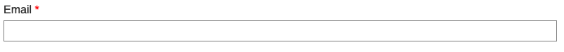Dans les formulaires « Contact » et « Demande d'allocation postnatale » :
- le champ « Email » n'indique pas le format attendu ;
- le message d'erreur du champ « Email » ne comporte pas d'exemple réel de saisie.
Identification des données attendues
Certains utilisateurs qui ont des troubles d'accès au langage verbal (paralysie cérébrale, aphasie par exemple) auront des difficultés à accéder au sens des termes écrits. Ainsi, pour leur permettre de remplacer les étiquettes présentes dans les formulaires par des étiquettes (verbales ou imagées) qu'ils connaissent, il est nécessaire d'identifier les champs avec un attribut particulier, de sorte qu'une technologie d'assistance pourra réaliser la personnalisation du formulaire nécessaire à l'utilisateur.
L'identification de ces champs permet également aux utilisateurs d'employer des outils pour remplir automatiquement les champs identifiés avec des valeurs de l'utilisateur.
On ne va rechercher que les champs qui attendent une donnée personnelle. Le RGAA demande d'utiliser l'attribut autocomplete et il fournit l'ensemble des valeurs possibles pour l'attribut.
Constats sur le site
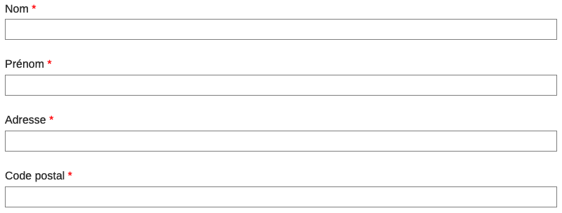Dans les formulaires « Contact » et « Demande d'allocation postnatale », les champs « Nom », « Prénom », « Adresse », « Code postal », « Localité », « email », ..., n'ont pas d'attribut autocomplete.
Navigation
Recommandation :
Faciliter la navigation dans un ensemble de pages par au moins deux systèmes de navigation différents (menu de navigation, plan du site ou moteur de recherche), un fil d'Ariane et l'indication de la page active dans le menu de navigation. Identifier les groupes de liens importants et la zone de contenu et donner la possibilité de les éviter par des liens de navigation interne. S'assurer que l'ordre de tabulation est cohérent et que la page ne comporte pas de piège au clavier. S'assurer que les raccourcis clavier qui utilisent une seule touche sont contrôlables par l'utilisateur.
Landmarks ARIA
Pour fournir des points de repère aux utilisateurs aveugles, il faudra également implémenter les landmarks ARIA sur les balises HTML 5 de la page.
Constats sur le site

Le bouton « loupe » permettant d'afficher et masquer le moteur de recherche n'est pas dans un conteneur commun avec le formulaire de recherche, afin que celui-ci ait l'attribut role="search".
Ordre de tabulation
La navigation dans les contenus peut être considérablement compliquée pour les personnes aveugles ou les personnes handicapées motrices qui naviguent au clavier si l'ordre de tabulation n'est pas cohérent.
L'ordre de tabulation est déterminé par l'ordre des éléments dans le code HTML. Il ne suit pas forcément l'ordre de lecture de la page ou de l'écran, mais il doit être cohérent en fonction de la nature des contenus et des fonctionnalités.
Constats sur le site
Lorsqu'on navigue au clavier, on tabule dans des éléments qui sont visuellement masqués. Par exemple : après avoir tabulé sur le lien "Autres sites", on tabule dans un élément non visible.
Accès aux contenus additionnels proposés au survol ou la prise de focus sur un élément interactif.
Les personnes aveugles et les personnes handicapées motrices qui ne peuvent pas utiliser de souris doivent pouvoir accéder au clavier aux contenus additionnels qui apparaissent à la prise de focus ou à l'activation d'un élément interactif.
C'est par exemple le cas d'une infobulle qui contiendrait un lien ou d'autres éléments interactifs. Dans cette situation, il faut que ces utilisateurs puissent utiliser le clavier pour parcourir le contenu de l'infobulle.
Constats sur le site
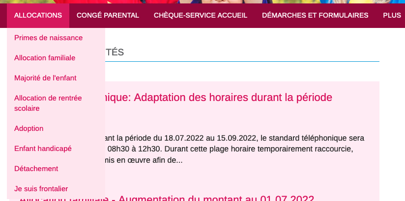Les sous-menus de la navigation principale ne sont pas accessibles au clavier.
Consultation
Recommandation
Vérifier que l'utilisateur a le contrôle des procédés de rafraîchissement, des changements brusques de luminosité, des ouvertures de nouvelles fenêtres et des contenus en mouvement ou clignotants. Ne pas faire dépendre l'accomplissement d'une tâche d'une limite de temps sauf si elle est essentielle et s'assurer que les données saisies sont récupérées après une interruption de session authentifiée. Proposer des versions accessibles ou rendre accessibles les documents en téléchargement. S'assurer que la consultation n'est pas dépendante de l'orientation de l'écran. Toujours proposer un geste simple en alternative d'un geste complexe permettant de réaliser une action.
Documents en téléchargement
Assurez-vous que chaque document soit accessible (cf. les Guides de créations de documents bureautiques accessibles), ou qu'il dispose d'une alternative accessible proposant le même contenu (par exemple, une version HTML correctement structurée).
Constats sur le site
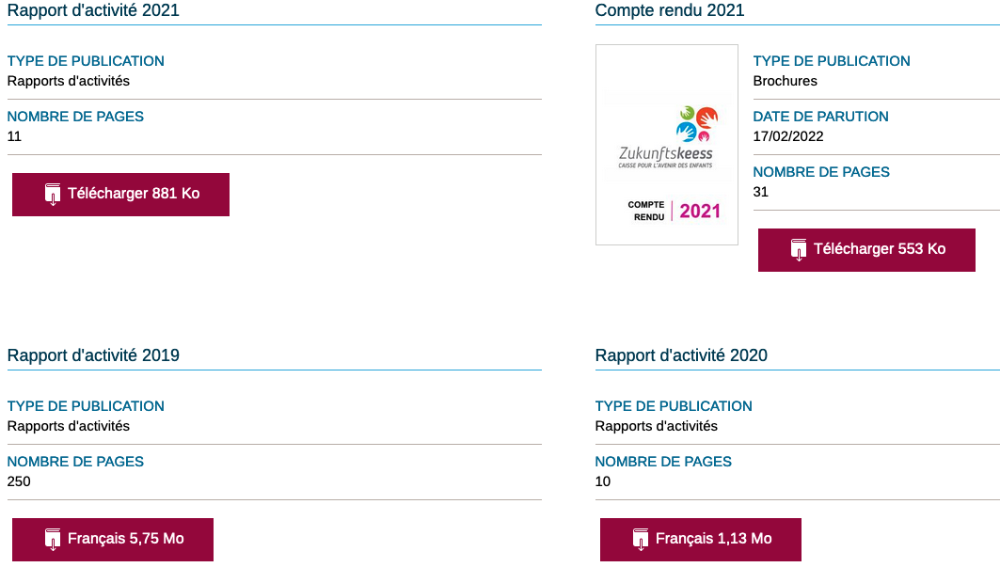On trouve sur la page « Publications » , tous les documents PDF en téléchargements qui ne sont pas accessibles.